General Overview
Common options
All plotting functions require a function $\mathbb{C} \to \mathbb{C}$ as first argument and accept optionally axis limits as a second.
If no limits are provided by default unit length is taken in all four directions. If a list of two numbers is provided the first is used as both limit in the real direction and the second in the imaginary direction. A list of four elements are interpreted as $({\rm Re}_{\rm min}, {\rm Re}_{\rm max}, {\rm Im}_{\rm min}, {\rm Im}_{\rm max})$.
All plots have a keyword argument pixels by which one can specify the number of samples in respectively the real and imaginary direction. If only one number is provided it is used for both.
Additionally there is also the option to fill in a box, or list of boxes in the output space using the option box, which is illustrated in the section on checkerplot and sawplot.
Finally, any remaining keywords are passed to the backend. This, together with the modifying variants (domaincolor!, checkerplot!, etc.), makes the plotting routines in this library behave similarly to other plot types. For more information we refer to the Plots.jl and Makie documentation.
The remainder of this page gives a quick overview of the main plotting functions of DomainColoring.jl.
The domaincolor function
The phase output of domaincolor is generally not suited for those with color vision deficiency, refer to Plotting for Color Vision Deficiency instead.
By default domaincolor produces a phase plot such as the following.
domaincolor(sinc, (3, 1.5))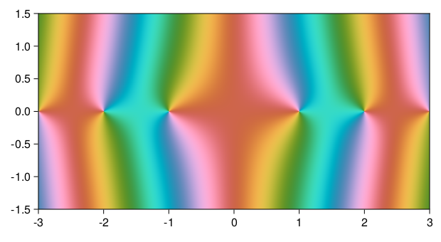
One can additionally superimpose contour lines of the magnitude as sweeps of increasing lightness by setting abs = true. Where this increase of lightness is taken proportional to the fractional part of $\log|f(z)|$.
domaincolor(sinc, (3, 1.5), abs=true)Finally, one can also add a dark grid where the imaginary or real part of $f(z)$ is integer by setting grid = true.
domaincolor(sinc, (3, 1.5), grid=true)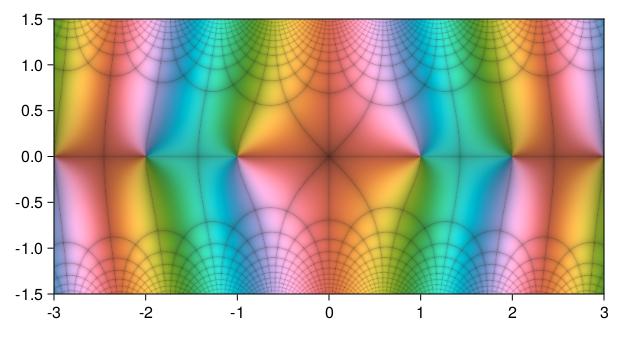
Of course these options can be combined, the common combination of abs = true and grid = true even has an abbreviation all = true.
domaincolor(sinc, (3, 1.5), all=true)The argument interface contains many further options, but we will delay their discussion until after introducing the checkerplot and sawplot functions.
The checkerplot and sawplot functions
A checker plot shows limited information and is useful to detect patterns in certain contexts. By default a checker board pattern is used with one stripe for an unit increase in either direction. A checkerplot of the identity function makes this clearer.
checkerplot(z -> z, 5)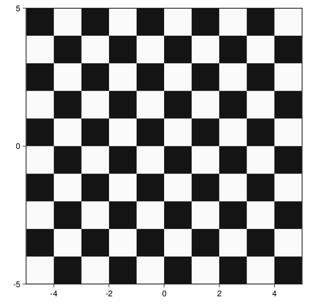
A saw plot is similar but shows ramps instead of solid stripes, to get an idea of the direction of increase. Their interface is almost identical, so we'll use them interchangeably for most examples.
The previous example as a saw plot would be:
sawplot(z -> z, 5)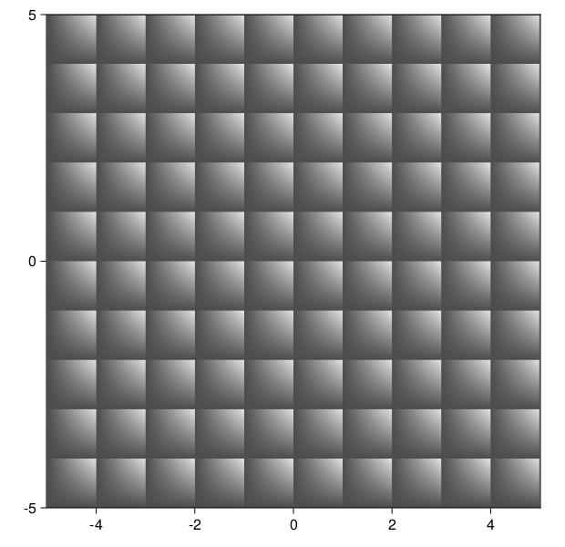
You can limit the stripes to only show increase in the real or imaginary part by setting real = true or imag = true, respectively. Again the previous example.
checkerplot(z -> z, 5, real=true)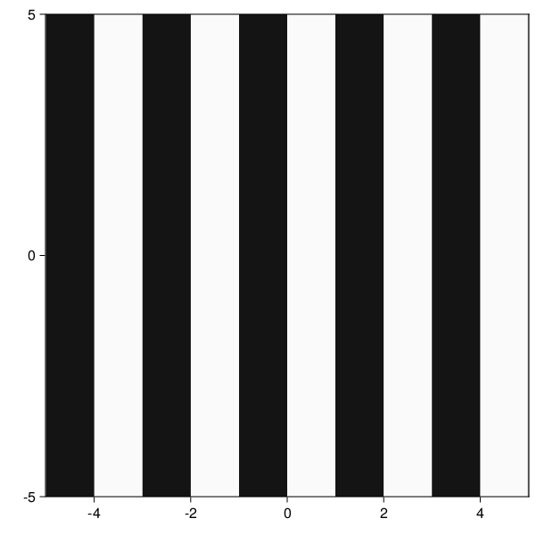
Setting real = true and imag = true can be abbreviated to rect = true, which is identical to the default behaviour.
Alternatively one can also display a polar grid by setting polar = true, giving one band per unit increase of $\log|f(z)|$ and eight bands per $2\pi$ increase of $\arg(f(z))$.
sawplot(z -> z, 5, polar=true)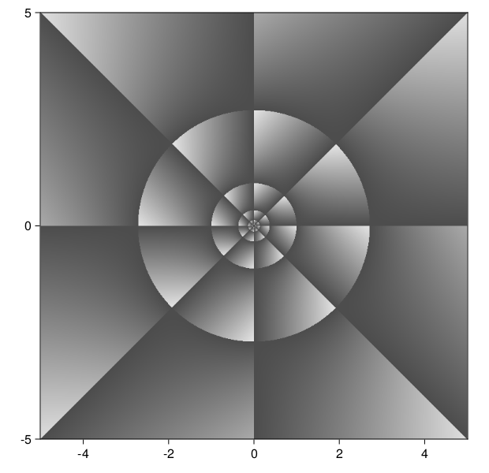
As with rect = true, polar = true is an abbreviation for abs = true and angle = true, showing magnitude and phase respectively. Now is a good time to mention that most arguments discussed so far also accept numbers, modifying the width or rate of the stripes. For example, we can change the basis of the logarithm used for the magnitude (alternatively one can also pass a function as in domaincolor, see next section):
checkerplot(z -> z, 5, abs=1.1)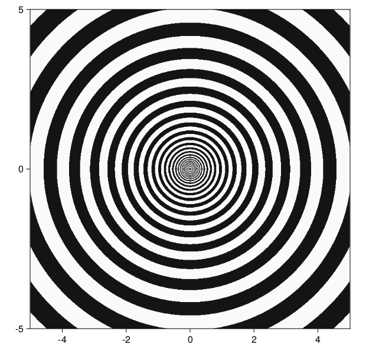
and for phase:
sawplot(z -> z, 5, angle=10)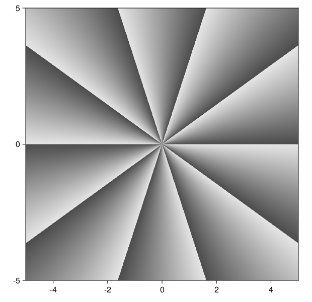
Note, that for a checkerplot the latter we needs to be an even number. If we set phase to a number, this will be used for abs and a suitable integer rate will be chosen for angle, for instance:
checkerplot(sin, (5, 2), polar=1.5)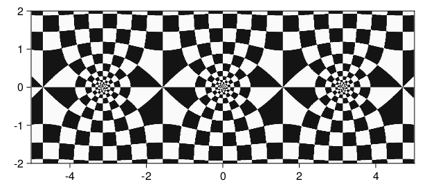
As mentioned before regions of the output plane can be colored using the box option, for example:
checkerplot(z -> z^2, 2, box=[(1,1im,:red), (-1-2im,-2-1im,:blue)])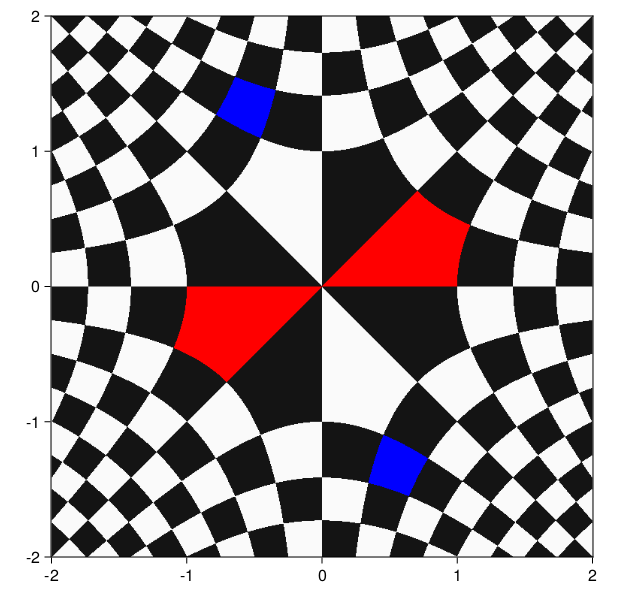
Finally, hicontrast = true can be used in checkerplot to plot in black and white instead of the slightly softer defaults, and color = true mixes phase coloring into a sawplot (further possibilities of this option are identical to domaincolor, as discussed at the end of the next section).
The domaincolor function, revisited
Like checkerplot and sawplot, abs and grid also accept numbers. Respectively, changing the basis of the used logarithm and the rate of the grid. Additionally, we can pass named tuples to open up even more options.
For grid these options are identical to checkerplot, for example an analogous example to the penultimate one of last section, is given by:
domaincolor(sin, (5, 2), grid=(polar=1.5,))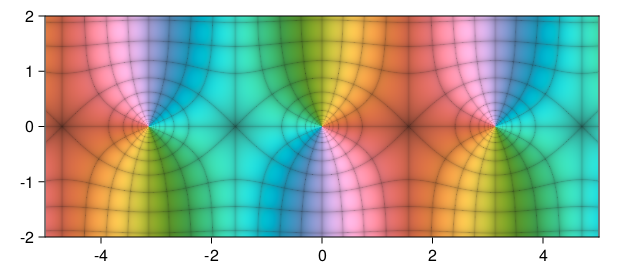
(Note: unlike before, the rate of angle need not be even for grids.)
The abs argument accepts a different basis from the default $e$, if we for instance wanted to see orders of magnitude, we could look at:
domaincolor(z -> z^3, 5, abs=10)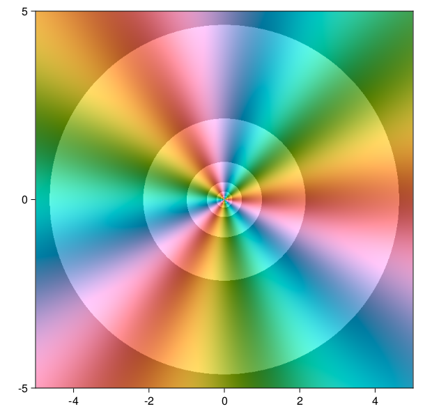
If one does not want to look at the logarithm of the magnitude, but the magnitude itself, they can use the transform option, or pass a function directly to abs, for instance:
domaincolor(sqrt, (-1, 19, -4, 4), abs=z->z)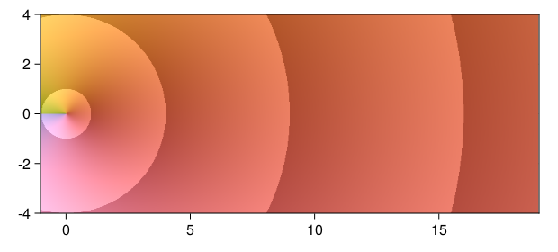
Finally, if we set the base to Inf, the magnitude is colored from black at zero to white at infinity, which we can use to illustrate the Casorati–Weierstrass theorem:
domaincolor(z -> exp(1/z), .1, abs=Inf)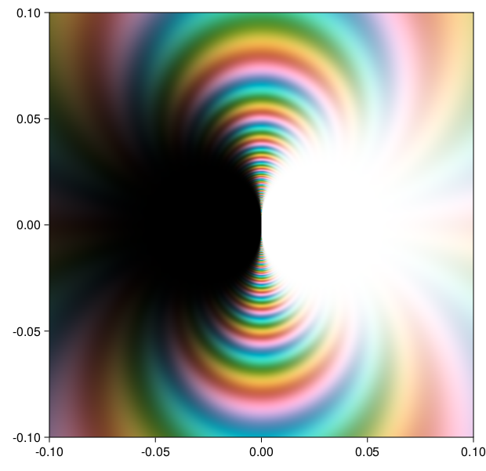
The harshness of these white an black areas can be changed using the sigma parameter, try for instance:
domaincolor(z -> exp(1/z), .1, abs=(sigma=0.001,))If one wants to change the coloring of the phase angle, they can pass a ColorScheme (as an object or by name, see their documentation) or a function θ -> Color, to color. As an example of the latter, we can add a discretization effect:
discrangle(θ) = DomainColoring.labsweep(π/10 * floor(10/π * θ))
domaincolor(tan, π/2, color=discrangle)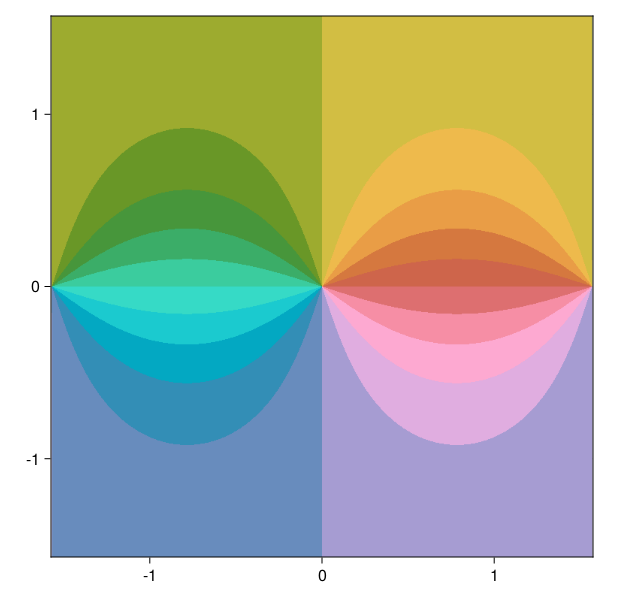
There is also a :print option that uses a desaturated version of the default color scheme, which is more suitable for consumer grade printers.
domaincolor(tan, π/2, color=:print)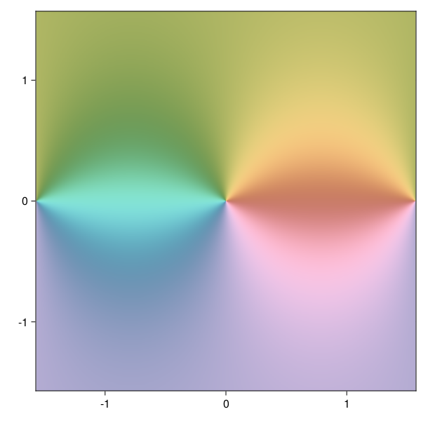
Finally, if no coloring of the phase is wanted, we can set color = false.
The Riemann sphere
To close, let us demonstrate how you can combine plots in the Makie framework to plot the two hemispheres of the Riemann sphere side to side.
Separately these would be for some function f, say sin
f = sin
domaincolor(z -> abs(z) <= 1 ? f(z) : NaN)and
domaincolor(z -> abs(z) <= 1 ? f(1/z) : NaN)where we used that NaN is shown transparent by the plots of this package.
In Makie a layout of Axis objects is collected in a Figure, we can position them by indexing the figure. Two axes side by side would for instance be:
using CairoMakie
fig = Figure()
ax11 = Axis(fig[1,1])
ax12 = Axis(fig[1,2])
fig![Example block output]()
As a final complication, domaincolor! can't change the aspect ratio of a plot, hence we have to set it to square at the time of creation, giving finally the function (where we also pass keyword arguments):
function riemann(f; kwargs...)
fig = Figure()
ax11 = Axis(fig[1,1], aspect=1)
domaincolor!(ax11, z -> abs(z) <= 1 ? f(z) : NaN; kwargs...)
ax12 = Axis(fig[1,2], aspect=1)
domaincolor!(ax12, z -> abs(z) <= 1 ? f(1/z) : NaN; kwargs...)
fig
endFor the sine function this for instance gives:
riemann(sin, abs=true)